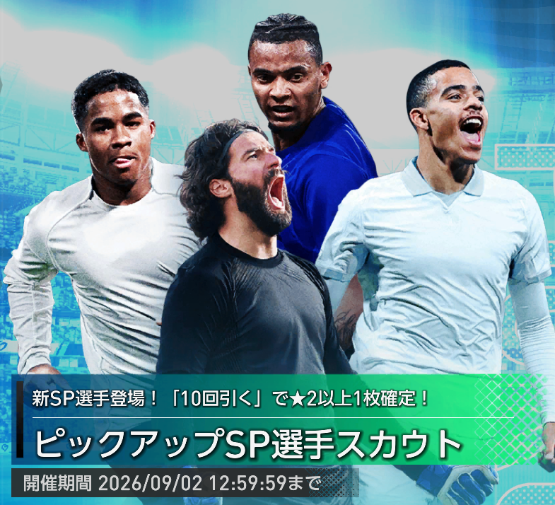
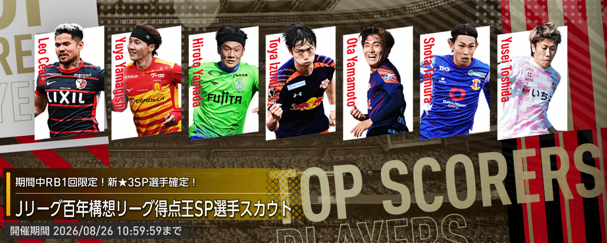
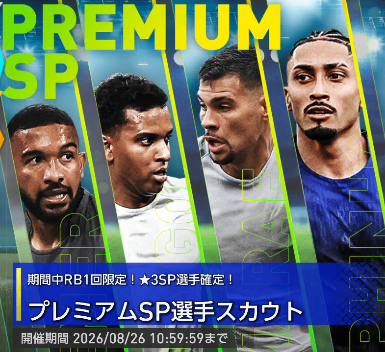
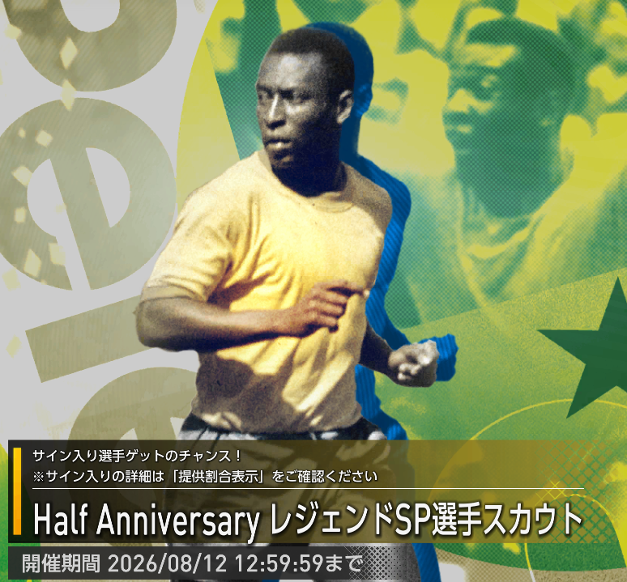
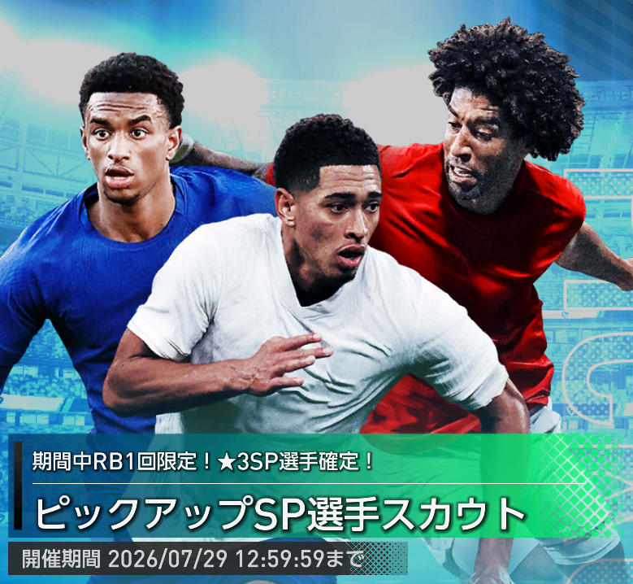
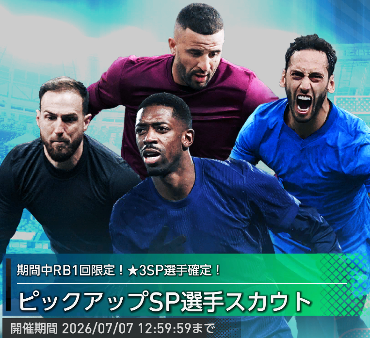

【サカつくTV #10】Ver2.2アップデート情報まとめ｜アクセサリー・ボーナスカウント・新ガチャ・ピザーラコラボ
サカつくTV #10で発表されたVer2.2アップデート情報を総まとめ。新要素「ボーナスカウント」「アクセサリー」を中心に、直接オファー・継承改善、サカつく2026検定、新ガチャ、公式ストア、ピザーラコラボ、MCセイカさんのアシスタント登場まで詳しく解説します。
このページでは、サカつく2026攻略DBに掲載している攻略記事を5つのカテゴリに整理しています。
スカウト・ガチャ、育成・初心者、選手・編成、イベント・特集、アップデート・情報から絞り込みでき、キーワード検索と最新順・古い順の並び替えにも対応しています。目的の記事を探す際にご活用ください。
サカつくTV #10で発表されたVer2.2アップデート情報を総まとめ。新要素「ボーナスカウント」「アクセサリー」を中心に、直接オファー・継承改善、サカつく2026検定、新ガチャ、公式ストア、ピザーラコラボ、MCセイカさんのアシスタント登場まで詳しく解説します。

アリソン、エンドリッキ、メイソン・グリーンウッド、マヌエル・アカンジの性能とおすすめ度を徹底評価。代用選手・互換選手を画像付きで比較し、現在の入手可否まで含めてガチャを引くべきか解説します。

★3排出率10.5％＆★3はピックアップ確定。レオ・セアラ、山岸祐也、山田寛人、泉柊椰、山本桜大、田村翔太、土信田悠生の性能・おすすめ度と、ガチャを引くべきかを徹底評価します。

イベント限定「ブラジルセレクションSP選手スカウト」を無料チケットで100連！10連ごとの演出や★3排出結果、確率、メダル交換まで画像付きで紹介します。

サカつく2026 Ver2.1対応。SP選手13～14名のチームを作り、成長期イベントを育成したい選手へ集中させて覚醒5回を狙う育成方法を、手順・発生イベント・注意点・Q&A付きで解説します。

サカつくTV #9で発表されたVer2.1アップデートとハーフアニバーサリー情報を総まとめ。インターナショナルカップ、SPECIAL 1vs1、ブラジルセレクション100連、ペレ、影山優佳、新機能・改善内容まで詳しく解説します。

ブルーノ・ギマランイス、ハフィーニャ、ロドリゴ、ブレーメルの性能・Tier評価・代用候補・ガシャ優先度を徹底解説。ハーフアニバーサリーとの優先順位も紹介します。

Half AnniversaryレジェンドSP選手スカウトに登場したペレ、ヴィニシウス・ジュニオール、エデル・ミリトン、エデルソンを徹底評価。 新金フォーメーションコンボ「セレソン'70」の適性や、リセマラおすすめ度、引くべきかを攻略目線で解説します。

ジュード・ベリンガム、ヨシュコ・グヴァルディオル、アレハンドロ・バルデ、ダンテの性能・おすすめ度・Tier評価を掲載。RB確定10連の注意点や、日本代表SP選手スカウトとの優先順位も解説します。

香港レジェンドSP選手スカウトに登場した歐偉倫（オウ・ワイルン）と李健和（リー・キンワ）を評価。★3排出率5%、RB1回限定10連の注意点、サイン付きカード、フォメコン要員としての価値まで解説します。

ワールドカップ2026決勝トーナメント進出32か国の中から、 サカつく2026に登場している★3SP選手を国別に一覧化。 トーナメント表から各国の選手リストへジャンプでき、代表背番号やポジションも確認できます。

日本代表SP選手11名をTier表で評価。★3排出率11%、カウンター金フォメコン対応、新スキル・新特徴、初の赤適性ポジション持ちなど、引くべきかを攻略目線で解説します。

ウスマン・デンベレ、ヤン・オブラク、ハカン・チャルハノール、カイル・ウォーカーの性能とおすすめ度を、 ブラウ・グラーナ'15適性やMLS実装記念ガチャとの優先度も含めて徹底解説する記事です。

次回ガシャで追加される新SP選手を、公開された匂わせ画像の国旗・ポジション・シルエットから予想。エムバペ、オブラク、アルダ・ギュレル、アレクサンダー＝アーノルド実装の可能性を考察します。

ドイツ、ブラジル、カナダなど、ワールドカップ2026出場国の中でまだサカつく2026に実装されていない国に注目。 「もしSP選手として実装されたら？」という視点で、ヴィニシウス、ムシアラ、アラバなど注目スター選手の予想性能やフォメコン適性を考察した妄想記事です。

FIFA公式日本語サイトの登録メンバーをもとに、 ワールドカップ2026出場国の中でサカつく2026に実装されている★3SP選手を徹底紹介。 日本代表はもちろん、メッシ、エムバペ、ハーランドなど各国スター選手の代表背番号やポジションを一覧で確認できます。

無料で受け取れる★3確定チケットの入手方法を画像付きで解説。 AccountIDの確認方法、アイテムコードの入力手順、SEGAアカウントのメルマガ設定まで初心者にも分かりやすく紹介しています。

Ver2.0で刷新されたJリーグSP100名、KリーグSP24名の中から、 唯一無二のスキル・特徴、新プレイスタイル、金フォーメーションコンボ適性を持つおすすめ選手を徹底紹介。 「誰を交換・確保すべきか」がひと目で分かる保存版記事です。

リオネル・メッシ、ソン・フンミン、トーマス・ミュラー、 マルコ・ロイス、クリスティアン・ロルダンの性能とおすすめ度を、 ネラッズーロ'10適性や環境評価も含めて徹底解説する記事です。

サカつくTV #8で発表されたVer2.0大型アップデート情報を整理。 MLS・Kリーグ2追加、日本代表公式ライセンス、新プレースタイル、監督ノート、ミッション更新、ガチャ・キャンペーン情報までまとめた記事です。

300万DL記念パックの内容を徹底検証。 ★3確定SP選手スカウトとSSR確定特連カードガチャの対象範囲や注意点、購入する価値があるのかを解説する記事です。

モハメド・サラー、アントワーヌ・グリーズマン、 ニコ・ウィリアムズ、アンヘル・コレアの性能とおすすめ度を、 金フォーメーションコンボ適性や環境評価も含めて徹底解説する記事です。

新たに追加された銀ランクフォーメーションコンボ4種を徹底解説。 ブロ・グルト'94、ディー・アドラー'24などの性能、 発動条件、対応選手、採用価値を攻略目線で評価する記事です。

東慶悟、森重真人、小林悠、倉田秋、西川周作、家長昭博、 キム・ジンヒョン、永井謙佑の性能とおすすめ度を、 金フォーメーションコンボ適性や環境評価も含めて徹底解説する記事です。

中村憲剛、柿谷曜一朗、佐藤寿人、林陵平、坪井慶介の性能とおすすめ度を、 限定ガチャの注目ポイントやフォーメーションコンボ適性も含めて解説する記事です。

スコット・マクトミネイ、ウィリアム・サリバ、ディマルコ、ジョアン・ガルシアの性能とおすすめ度を、 ガチャ仕様の注意点やフォーメーションコンボ適性も含めて解説する記事です。

配布されたSP選手メダルのおすすめ交換先を解説。 交換前の注意点と金コンボとの相性を中心に優先度を整理した記事です。

レヴァンドフスキ、バストーニ、チュアメニ、マッケニーの性能と当たり度を、 フォーメーションコンボ適性や代用選手も含めて解説する記事です。

マンチェスター・シティ記念SP選手スカウトで追加された ハーランド、マーモウシュ、アケの性能とおすすめ度をまとめた記事です。

プレイスタイル一致・上限上昇・移籍期間の考え方など、 期限付き移籍で失敗しないための基本を解説する記事です。

コンボ検索の使い方、強いコンボを探す時の考え方、 編成を組む時に見るべきポイントをまとめた記事です。

選手評価ツールを使って、育成方針や比較判断を行うための見方を解説する記事です。

序盤で意識したい選手育成、コンボ確認、施設強化の優先順位をまとめた記事です。
条件に一致する記事がありません。キーワードやカテゴリを変更してください。